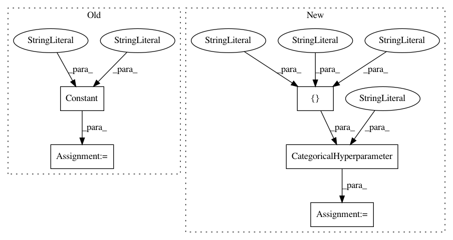

9f064b12701d517b3135bebe73092fee63abca21,autosklearn/pipeline/components/regression/random_forest.py,RandomForest,get_hyperparameter_search_space,#Any#,111
Before Change
def get_hyperparameter_search_space(dataset_properties=None):
cs = ConfigurationSpace()
n_estimators = Constant("n_estimators", 100)
criterion = Constant("criterion", "mse")
max_features = UniformFloatHyperparameter(
"max_features", 0.5, 5, default_value=1)
max_depth = UnParametrizedHyperparameter("max_depth", "None")
min_samples_split = UniformIntegerHyperparameter(
After Change
def get_hyperparameter_search_space(dataset_properties=None):
cs = ConfigurationSpace()
n_estimators = Constant("n_estimators", 100)
criterion = CategoricalHyperparameter("criterion",
["mse", "friedman_mse", "mae"])
max_features = UniformFloatHyperparameter(
"max_features", 0.5, 5, default_value=1)
max_depth = UnParametrizedHyperparameter("max_depth", "None")
min_samples_split = UniformIntegerHyperparameter(
In pattern: SUPERPATTERN
Frequency: 4
Non-data size: 5
Instances
Project Name: automl/auto-sklearn
Commit Name: 9f064b12701d517b3135bebe73092fee63abca21
Time: 2017-10-24
Author: feurerm@informatik.uni-freiburg.de
File Name: autosklearn/pipeline/components/regression/random_forest.py
Class Name: RandomForest
Method Name: get_hyperparameter_search_space
Project Name: automl/auto-sklearn
Commit Name: 9f064b12701d517b3135bebe73092fee63abca21
Time: 2017-10-24
Author: feurerm@informatik.uni-freiburg.de
File Name: autosklearn/pipeline/components/feature_preprocessing/extra_trees_preproc_for_regression.py
Class Name: ExtraTreesPreprocessorRegression
Method Name: get_hyperparameter_search_space
Project Name: automl/auto-sklearn
Commit Name: 9f064b12701d517b3135bebe73092fee63abca21
Time: 2017-10-24
Author: feurerm@informatik.uni-freiburg.de
File Name: autosklearn/pipeline/components/regression/decision_tree.py
Class Name: DecisionTree
Method Name: get_hyperparameter_search_space
Project Name: automl/auto-sklearn
Commit Name: 9f064b12701d517b3135bebe73092fee63abca21
Time: 2017-10-24
Author: feurerm@informatik.uni-freiburg.de
File Name: autosklearn/pipeline/components/regression/extra_trees.py
Class Name: ExtraTreesRegressor
Method Name: get_hyperparameter_search_space